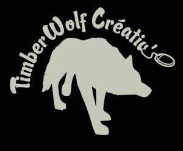
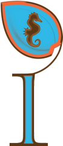
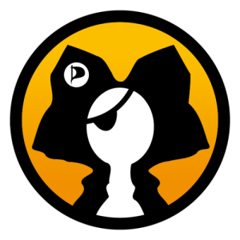
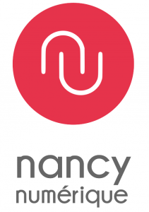

Les desciptif de tous les stands présentés lors de Vosges Opération Libre.
Lorraine Data Network
DétailsNous travaillons en particulier sur la sensibilisation à la protection de la vie privée sur Internet, et nous apportons des solutions concrètes en terme d’hébergement. Nous visons également à créer une dynamique locale à la Lorraine en faisant régulièrement se rencontrer les différents membres de l’association. Au même titre que les services d’hébergement, nous proposons des abonnements à Internet soumis à une charte éthique visant à respecter les droits fondamentaux des citoyens numériques, notamment en terme de neutralité et de vie privée.
Nous sommes membres fondateurs de la Fédération FDN.
Framasoft, éducation populaire au Libre
DétailsAire Libre
DétailsLa création des sites utilise au maximum les solutions libres, permettant aux clients de bénéficier d’outils pour éditer leur design ou reprendre le code source indépendamment du prestataire. Parmi les outils utilisés : Linux (Ubuntu), Inkscape, Gimp, Scribus, Kate, LAMP.
Mathieu Muths est gérant de l’entreprise, et sera présent pour présenter tout particulièrement CMS Made Simple aux visiteurs de Vosges Opérations Libres.
Aire Libre est membre de l’Association Francophone des Utilisateurs de CMS Made Simple qui a pour but la promotion du CMS et l’aide aux utilisateurs.
Open Edge
DétailsFontenoy-Le-Château
Détails{kind=link}
Cité puissante à la Renaissance, l’église Saint-Mansuy en est le témoin, puis anéantie à la guerre de Trente-Ans, Fontenoy retrouvera son lustre au XVIIIe Siècle comme en témoignent les hôtels de la rue principale. Fontenoy eut même l’honneur de voir naître le chef de file des Romantiques, le poète Gilbert.\\
Le XIXe, sera celui de la métallurgie on y fabrique des couverts étamés et des clous, on y brasse une bière excellente, les carrières et les scieries donnent du travail aux habitants. La renommée de la broderie de Fontenoy, broderie blanche au métier est internationale. Nous pouvons nous enorgueillir de l’enfant du pays, Julie-Victoire Daubié, première femme bachelier.
Comme dans de nombreuses vallées vosgiennes, l’industrie ira déclinant tout au long du XXe. s. Aujourd’hui dans un cadre préservé, entouré par les forêts, le village ne résonne plus au bruit des forges et les brodeuses ne travaillent plus pour les trousseaux royaux, mais on peut encore admirer leur travail au Musée de la Broderie et de la Métallurgie au centre du village. Et si de l’antique château fort il ne reste que des ruines, ce sont celles du plus vieux donjon de Lorraine. Pour toutes ces raisons Fontenoy est apprécié par les touristes, les randonneurs et les plaisanciers du canal de l’Est qui font escale au port de plaisance.
GOALL
Détails{kind=link}
L’association GOALL est membre du CNLL. À ce titre, elle s’efforce de défendre les intérêts des Entreprises du Numérique Libre (ENL) qui interviennent en Lorraine. Elle organise chaque année les Rencontres Régionales du Logiciel Libre et du Secteur Public, en partenariat avec le CNFPT.
Elle édite l’Annuaire des professionnels du Libre en Lorraine.
Elle aide à organiser des formations et des certifications LPI en Lorraine.
Elle met à jour régulièrement et distribue sur clé USB un ensemble de logiciels libres pour Windows, utiles aux associations et aux professionnels : COMPILIBRE. Une version spéciale sera disponible à l’occasion des rencontres Vosges Opération Libre.
Si vous voulez installer un système GNU/Linux sur votre ordinateur (nous recommandons GNU/Linux Mint pour débuter) ou d’autres logiciels libres, amenez votre matériel, nous vous aiderons.
L’association poursuit un but non lucratif. L’adhésion est gratuite, la participation aux activités est ouverte à tout le monde et toutes les bonnes idées pour faire progresser la culture libre en Lorraine sont les bienvenues.
Aeroseed
Détails{kind=link}
- Étude et conception de systèmes industriels
- Simulation numérique : écoulement de fluides (hydrodynamique et aérodynamique), calcul thermique, résistance des matériaux.
AEROSEED a développé une éolienne verticale innovante, à pales orientables, capable de fonctionner en zone turbulente (milieu urbain, paysage montagneux). La partie génératrice a été développée en collaboration avec un enseignant de l’IUT de Saint-Dié.
AEROSEED diffusera tous les plans de l’éolienne sous licence libre afin que la production d’énergie devienne un bien commun.
L’éolienne sera présentée au public à Gérardmer, vous pourrez rencontrer ses concepteurs et discuter avec eux.
SliTaZ
Détails
Les petits débrouillards
Détails{kind=link}
- Les Taxinomes : plateforme de partage et de géolocalisation de la biodiversité,
- Le wikidébrouillards : base de donnée d’expériences scientifiques ludiques et amusantes,
- Le portail des explorateurs : site de partage de la culture scientifique au quotidien,
- La Plateforme « Le science Tour » : plateforme permettant le partage, la mutualisation et l’information des projets scientifiques.
Le mouvement associatif des Petits Débrouillards qui, depuis 1984, offre aux enfants des activités scientifiques et techniques, participe de manière significative aux débats de société sur l’éducation et la culture. Organisé en réseau, il contribue à former des citoyens actifs, capables d’opinions réfléchies et critiques, acteurs de la construction du monde de demain. L’action des Petits Débrouillards auprès des enfants est guidée par un ensemble de convictions et de valeurs éducatives partagées qui s’expriment simplement. En voici les grandes lignes:
- Faire découvrir la science en s’amusant, afin de créer une relation durable entre l’enfant et la culture scientifique.
- Cultiver le plaisir de comprendre, d’échanger, de s’exprimer et de débattre.
- Donner à l’enfant le goût de la démarche scientifique, faite de curiosité, de recherche de vérité, de liberté et d’initiative; démarche qui se veut expérimentale, se référant au quotidien, invitant à prendre conscience de la portée et des limites de ses propres affirmations; une démarche autorisant à tout remettre en question, faite de doute, d’ouverture et de générosité.
- Développer le sens du partage, de la solidarité et du respect de l’autre, en favorisant l’implication active dans la vie de la société et dans un esprit d’ouverture au monde.
Tels sont les principes qui unissent les acteurs du réseau et qui reflètent la réalité des engagements et des actions éducatives du mouvement associatif des Petits Débrouillards.
Allied Data Sys.
DétailsL´idée principale est de rendre une indépendance, une sécurité, une pérennité à vos installations informatiques et téléphoniques, qui sont devenues indispensables à votre métier.
Nos solutions combinent les technologies les plus sûres et les plus simples à mettre en oeuvre. En collaboration avec nos partenaires, nous protégeons les données sensibles et les réseaux des PME/PMI, des moyennes et grandes entreprises, des collectivités locales et des administrations.
Nous présenterons pendant ces journées des solutions de gestion d’infrastructures informatiques et téléphoniques, standards et réseau GSM privé, HotSpots WiFi et ERP.
Open Food Facts
DétailsTux Service et Sc-Assistance
Détails- Relation clients, fournisseurs
- Facturation, points de vente
- Comptabilité
- Gestion documentaire, archivage
- Gestion de projet
- …
S’affranchir des solutions propriétaires et utiliser les solutions “libres” c’est pouvoir se recentrer sur son activité, focaliser ses investissements sur l’optimisation des outils afin d’augmenter la performance de l’organisation tout en maîtrisant la pérennité des solutions par l’accès au “code” des programmes mis en place.
SC-Assistance accompagne les structures dans l’analyse de leurs besoins et au cours des étapes de validation et de formation des collaborateurs.
TUXservices gère la partie matérielle et logicielle par l’utilisation des nombreuses solutions « libres » disponibles.
Vous seront présenté sur le stand en exemple :
- LibreOffice : suite bureautique pour utilisation familiale ou professionnelle
- OpenERP : pour une gestion modulaire, évolutive et professionnelle, de votre entreprise ou de votre organisation.
TimberWolf Créativ’
DétailsLa mini-entreprise TimberWolf Créativ’ présentera son E-Pub où vous êtes le héros.
{kind=link}
24 élèves de 1ère Bac Pro Gestion Administration du LP Camille Schneider de Molsheim se sont lancés dans la création d’une mini-entreprise ayant pour objet la création, conception et commercialisation d’un E-Pub libre, avec pour thème les contes et légendes alsacienne sur loup. Enigmes, musiques de la Poupée du Loup, dessins,… tout est libre sur leur E-Pub nommé » Mission Canis Lupus : Le temps des Loups »
« Libre comme le loup », la mini-entreprise a pour objectif principal d’accompagner le retour de cet animal en Alsace.
Pour mener à bien cette aventure, nous sommes épaulés, soutenus et coachés par de **nombreux partenaires** comme //Framasoft, loup.org, La Poupée du Loup, le Molodoï, Le Verger Editeur, TPCO et biens d’autres encore.
N’hésitez pas à venir nous rencontrer sur notre stand, si vous aussi, vous êtes : Libres comme le Loup !
Identité Web Lorraine
DétailsIdentité Web Lorraine est une entreprise géromoise spécialisée dans la création de site internet et solutions de référencement pour les professionnels.
{kind=link}
Elle utilise de nombreux logiciels libres pour offrir à ses clients des outils simple d’utilisation et adaptés à leurs besoins.
Lors de l’événement **Vosges Opération Libre**, une présentation du **CMS WordPress** sera proposée à tous et de manière simple.
CMS WordPress : découverte pour tout public
- Qu’est ce que le CMS WordPress ?
- Pourquoi choisir WordPress ?
- Comment créer un site internet avec WordPress
- Création de contenu
- Recommandations
Bnm Nancy
DétailsRéunies par le pôle métropolitain du Sillon Lorrain et avec le soutien de l’État, les quatre collectivités de Metz, Nancy, Thionville et Épinal portent un projet de Bibliothèque numérique de référence. Objectif : développer la médiation numérique, en proposant en ligne des contenus de très haute qualité – patrimoine écrit et graphique numérisé, ressources et contenus numériques, ainsi que des espaces et services à même de développer les pratiques culturelles numériques. Le projet a vocation à associer de très nombreux partenaires : bibliothèques, musées, archives, université, acteurs du tourisme…
La Bibliothèque-médiathèque de Nancy présentera Omeka, logiciel libre de gestion de bibliothèque numérique, avec lequel elle a réalisé deux expositions virtuelles. Vous pourrez découvrir et échanger sur les différentes fonctionnalités du logiciel et les nombreux usages que l’on peut en faire, notamment dans le secteur culturel, de la recherche.
Desclicks, informatique solidaire
DétailsL’association Desclicks, créée en 2005, a pour objet de rendre accessible au plus grand nombre les technologies de l’information et de la communication. L’association est spécialisée dans le réemploi de matériel informatique et la lutte contre l’obsolescence programmée. Nous organisons aussi des formations ainsi que des actions de sensibilisation aux logiciels et aux arts libres.
Parti Pirate Alsace
DétailsSection locale du parti pirate. Nous défendons les libertés fondamentales et individuelles, le partage du savoir et de la culture, la démocratie participative et liquide. Entre autres combats, nous sommes engagés en faveur des logiciels libres, de la neutralité du net, des créatives commons et de l’éducation numérique.
{kind=link}
Nancy Numérique
DétailsPrésentation du cycle « Vie Privée et Numérique »
Ce cycle débute le 23 Mai à Nancy, se poursuivra le 13 juin puis sur les mois de septembre à novembre, sur la région lorraine, en collaboration avec la Bibliothèque/médiathèque de Nancy et en partenariat avec les structures accueillantes. Le programme est en cours de création.
Voir nancynumerique.net
{kind=link}
Atelier « messagerie sur clé USB »
Vous vous déplacez pour le travail, pour les vacances… sans votre ordinateur.
Vous souhaitez utiliser votre messagerie dans des conditions de sécurité que tous les cybercafés ne garantissent pas.
Nous vous proposons d’installer Thunderbird,logiciel libre de messagerie, sur une clé USB, vos échanges ne laisseront donc pas de traces sur l’ordinateur du cyber café.
Nous pouvons également vous proposer de créer des clés de chiffrement afin d’authentifier vos messages… voire de les « mettre sous enveloppe » en les chiffrant.
Ces manipulations sont relativement simples, une aide pas à pas avec copies d’écran sera disponible.
MCL de Gérardmer
DétailsUn stand d’initiation aux usages de GIMP et de Wikimédia, pour travailler sur les photos de la MCL sera ouvert à tous les participants.